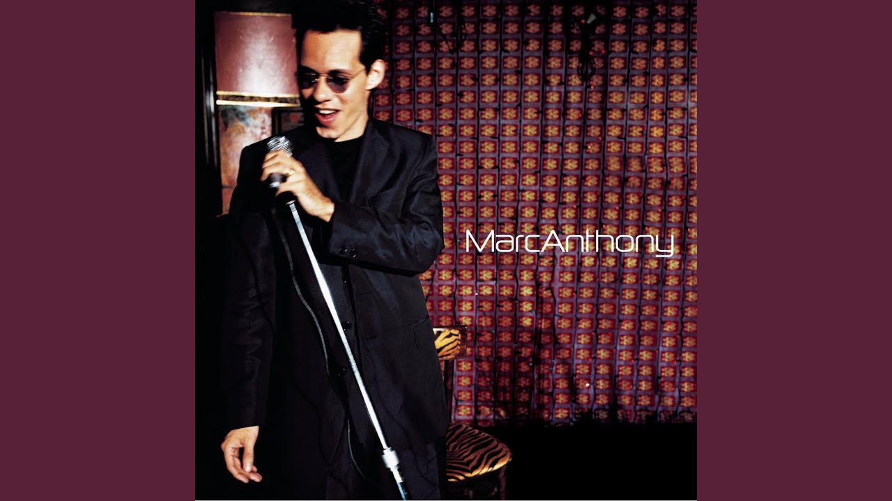
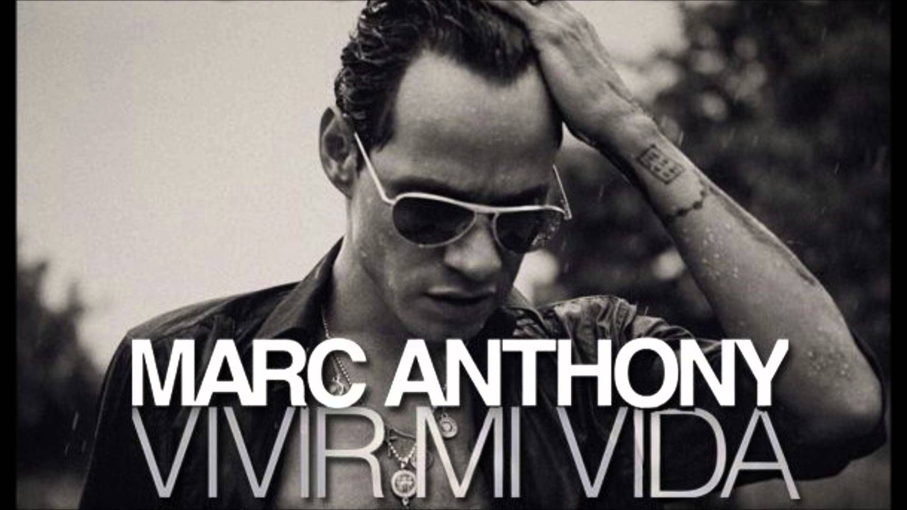

Why Marc Anthony
Why is Marc Anthony the best?
It's unusual for an artist to be so multi-talented.
Marc Anthony is a not only, an acclaimed vocalist/ performer he's also known as an actor. Some of his most known roles in movies or tv series are Man on Fire, Hawthorne, In the Time of the Butterflies, and El Cantante. He has performed at the Presidental White House and has concerts all over the world. Marc Anthony is a two-time Grammy Award and six-time Latin Grammy Award winner, who has sold more than 12 million albums worldwide.
Marc Anthony holds the Guinness World Record for best-selling tropical/salsa artist and the most number-one albums on the Billboard Tropical Albums year-end charts.
Songs
My Favorite Songs

Nadie Como Ella
“Nadie Como Ella” by Marc Anthony was written by Omar Alfanno. Translate the title to English (There is Nobody Like Her).
Release Date
May 30, 1995
Lyrics
" Ella sabe darse toda
En un instante
Derretir con la mirada
Un corazón
Ella es fuego que se siente
En mis labios cuando
Hacemos el amor"
That's Okay
“That's Okay” explores themes of heartbreak, acceptance, and personal growth. Marc Anthony broaden his audience by making the song have an English version. He still keeps his signature latin beat making this song an upbeat breakup song.
Release Date
September 14, 1999
Lyrics
" I remember how it used to be
When you said you were in love with me
Now I'm all alone sitting by the phone
There's that memory hanging over me"

Virvir Mi Vida
“Virvir Mi Vida” is all about life and how you should enjoy it. Sure sorrows may come but they pass and in the mean time dance, sing, laugh, but most of all enjoy. This iconic salsa hit, originally a cover of the Khaled song “C'est la vie,” was produced by Sergio George and released as part of Marc Anthony's album “3.0” in 2013.
Release Date
April 16, 2013
Lyrics
" Voy a reír, voy a bailar
Vivir mi vida la la la la
Voy a reír, voy a gozar
Vivir mi vida la la la la "
Nadie Como Ella
“Nadie Como Ella” by Marc Anthony was written by Omar Alfanno. Translate the title to English (There is Nobody Like Her).
Release Date
May 30, 1995
Lyrics
" Ella sabe darse toda En un instante Derretir con la mirada Un corazón Ella es fuego que se siente En mis labios cuando Hacemos el amor"
That's Okay
“That's Okay” explores themes of heartbreak, acceptance, and personal growth. Marc Anthony broaden his audience by making the song have an English version. He still keeps his signature latin beat making this song an upbeat breakup song.
Release Date
September 14, 1999
Lyrics
" I remember how it used to be When you said you were in love with me Now I'm all alone sitting by the phone There's that memory hanging over me"
Virvir Mi Vida
“Virvir Mi Vida” is all about life and how you should enjoy it. Sure sorrows may come but they pass and in the mean time dance, sing, laugh, but most of all enjoy. This iconic salsa hit, originally a cover of the Khaled song “C'est la vie,” was produced by Sergio George and released as part of Marc Anthony's album “3.0” in 2013.
Release Date
April 16, 2013
Lyrics
" Voy a reír, voy a bailar Vivir mi vida la la la la Voy a reír, voy a gozar Vivir mi vida la la la la "